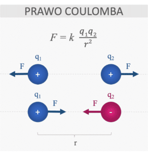

Siła wzajemnego oddziaływania dwóch naładowanych cząstek jest wprost proporcjonalna do iloczynu wartości tych ładunków i odwrotnie proporcjonalna do kwadratu odległości między nimi.
Kierunek działania siły oddziaływania ładunków wyznacza prosta przechodząca przez oba te ładunki.
Ładunki jednoimienne odpychają się, ładunki różnoimienne przyciągają się.
Prawo Coulomba zostało opublikowane w 1785 roku przez francuskiego fizyka Charlesa Coulomba.

Jednostką ładunku jest 1 kulomb (1C). Nazwa pochodzi od nazwiska Charlesa Coulomba, który sformuował
Prawo Coulomba.
1 kulomb (1 C) to ładunek elektryczny przenoszony w czasie 1 sekundy (1 s) przez prąd o natężeniu
wynoszącym 1 amper (1 A)
1 C = 1A*1s
Oddziaływanie ładunków zależy od ośrodka, w jakim znajdują się ładunki. We wzorze na siłę
elektrostatyczną tę zależność pomaga zilustrować stała elektrostatyczna k (zwana także
współczynnikiem
proporcjonalności lub niekiedy stałą kulomba).
Dla próżni stała elektrostatyczna k wynosi w przybliżeniu:
k = 8,9875*10 9N*m2 C-2
Stała elektrostatyczna wyraża się wzorem:
k = 1/4πϵ = 1/4πϵrϵ0
epsilon ϵ – przenikalność elektryczna ośrodka,
epsilon ϵr – względna przenikalność elektryczna ośrodka,
epsilon ϵ0– przenikalność elektryczna próżni
Współczynnik przenikalności elektrycznej próżni wynosi:
epsilon ϵ0 = 8,854 *1012C2/N*m2
Względne przenikalności elektryczne dla różnych ośrodków:
- próżnia: ϵr=1
- powietrze: ϵr=1,0006
- szkło: ϵr=10
- woda: ϵr=81